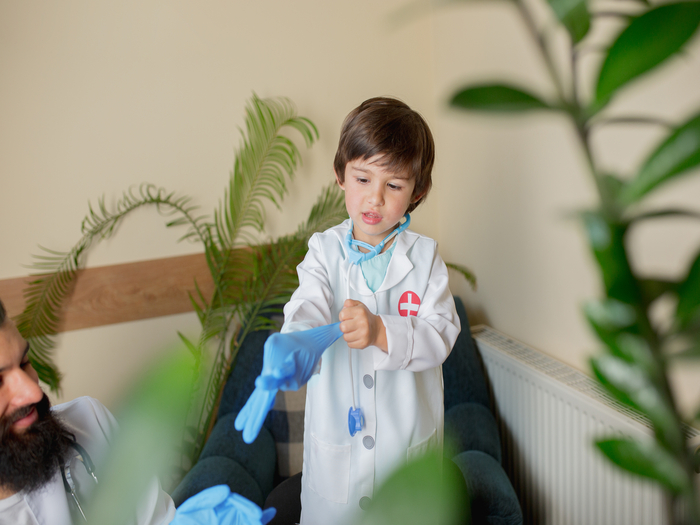

Teaching First Aid to Kids: Fun and Effective Strategies
Teaching first aid to children can be a valuable experience that not only prepares them for potential emergencies but also helps to build their confidence and sense of responsibility. While the idea of teaching first aid to children may seem daunting, it is possible to make the learning experience fun and engaging. In this blog, we'll explore some tips and strategies for teaching first aid to children.
1) Start with the basics:
When teaching first aid to children, it's important to start with the basics. Begin by teaching them how to recognize common injuries, such as cuts and bruises, and how to provide basic care, such as cleaning the wound and applying a bandage. From there, you can move on to more advanced skills, such as performing CPR or the Heimlich maneuver.
2) Use age-appropriate language and techniques:
When teaching first aid to children, it's important to use age-appropriate language and techniques. Use simple, easy-to-understand language and avoid medical jargon. Use demonstrations and hands-on activities to help children understand and retain the information.
3) Make it fun and engaging:
Learning first aid doesn't have to be boring. Incorporate games and activities into your teaching to make it fun and engaging. For example, you can use role-playing exercises to help children practice their first aid skills in a safe and controlled environment.
4) Emphasize the importance of safety:
When teaching first aid to children, it's important to emphasize the importance of safety. Teach them to never approach an emergency situation unless it is safe to do so and to always seek help from an adult or emergency services if necessary.
5) Practice, practice, practice:
As with any skill, practice makes perfect. Encourage children to practice their first aid skills on family members and friends, and provide opportunities for them to demonstrate their skills in real-life situations.